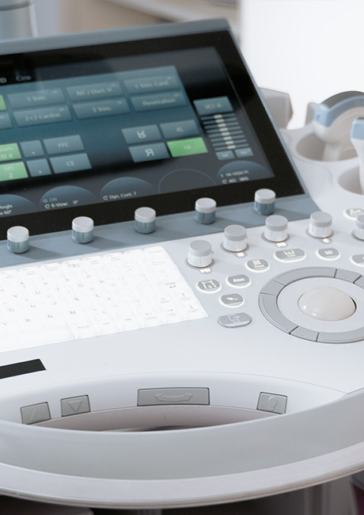

의료기기사업
인류 건강 증진을 위한 동아ST의 의료서비스
동아ST 의료기기 사업부는 의료서비스의
질 향상을 위해 최선을 다하겠습니다.
-
의료기기 사업부
- 의료기기 사업부
-
국민보건 향상을 위한 최첨단
의료기기를 수입합니다. -
의료분야의 전문서비스를 통한 국민보건 향상에 기여 하고자 세계굴지의 기업으로부터 최첨단 하이테크의 의료기기를 수입하여 국내시장에 공급하고 있습니다.
흉부외과,심장내과 영역의 의료기기를 비롯하여 수술용 기계용구 및 소모품류, 항암제 등을 지속적으로 투여할 수 있는 Port 및 카테라류를 수입하여 공급하고 있습니다. 또한, 개심 수술시 사용되는 인공 심장회로 세트를 맞춤형 주문제작 방식으로 전국 심장센터에 공급하고 있습니다.
-
의료기기 사업팀
- 의료기기 사업팀
-
글로벌 제약회사 동아ST의
사업팀을 소개합니다. -
의료기기영업1, 2팀에서는 외과용 전기수술장비, 내과용 동맥경화진단장비, 중심대동맥 혈압측정장비, 전자동혈압계, 비뇨기과 스텐트를 수입하여 판매하고 있습니다.
또한 개흉술시에 필요로 하는 심장관련 소모품의 Total Supplier로서 심장 수술을 시행하고 있는 국내 종합병원에 제품공급을 담당하고 있으며, 심장수술에 꼭 필요한 장비판매도 함께 진행하고 있습니다. 아울러 Oncology 분야에 Chemotherapy 치료 일환으로 Chemo port 및 Needle의 공급하고 있습니다.